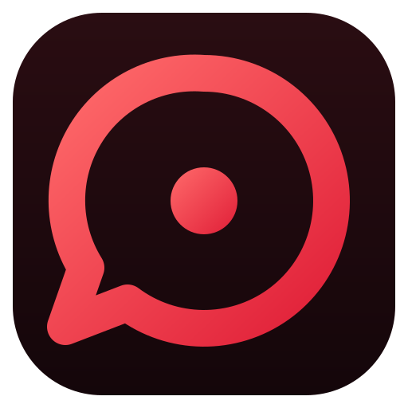

Discord 오버레이

Kuruma Overlay채팅과 사진을 투명한 창으로 띄워요. 클릭은 그대로 게임으로 통과해요.
- 채팅이 떴다가 사라져요새 메시지는 말풍선으로 나오고 몇 초 뒤 자연스럽게 사라져요. Ctrl+Shift+D로 바로 답장할 수 있어요.
- 사진은 따로, 크게이미지, GIF, 영상은 채팅 옆에 최대 3장까지 쌓여서 보이고 몇 초 뒤 사라져요.
- 원하는 자리에 끌어다 놓기모니터 모양 화면에서 위치와 크기를 정해요. 듀얼 모니터도 따로 지정할 수 있어요.
- 받은 설치 파일을 실행해요. "Windows의 PC 보호"가 뜨면 추가 정보 → 실행.
- 처음 설정에서 토큰, 서버 ID, 채널 ID, 메인·서브 모니터를 한 번만 입력해요.
- 끝. 다음부터는 바탕화면 아이콘으로 켜거나 Windows 시작할 때 자동으로 켜져요.
VRChat · ECLIPTICA
Ecliptica Overlay
VRChat 월드 ECLIPTICA 전용 DPS와 어그로 표시, 상점 업그레이드 사전이에요.
- 내 DPS와 보스 어그로VRChat 로그 파일만 읽어요. 게임 메모리나 입력은 건드리지 않아요.
- 상점 업그레이드 사전상점에 들어가면 자동으로 열려요. 직업별 업그레이드, 효과, 룬을 한국어·일본어·영어로 볼 수 있어요.
- 설치 없이 바로 실행압축을 풀고 EclipticaOverlay.exe를 실행하면 끝. Python은 필요 없어요.
보스 타겟 정보는 내 화면에서만
게임 안에서 다른 플레이어에게 퍼뜨리면 밴될 수 있고, 음성이나 채팅으로 알려주는 것도 Ecliptica 제작진이 권장하지 않는 회색 지대예요.
크레딧
업그레이드 사전·보스·맵 정보는 Ecliptica Wiki(ruralist, WhereFernsGrow) 기준이며 CC BY-SA 4.0을 따라요. 한국어·일본어 설명은 영어 위키 원문을 이 도구에서 번역했어요.
아이콘: Ana T(업그레이드), TheWIPArtist(보스), OccyBee(효과), Blacksheepiess(유물·직업). 아이콘은 처음 사전을 열 때 위키에서 받아요.
Ecliptica의 모든 게임 콘텐츠는 Ecliptica 제작진에게 있어요.